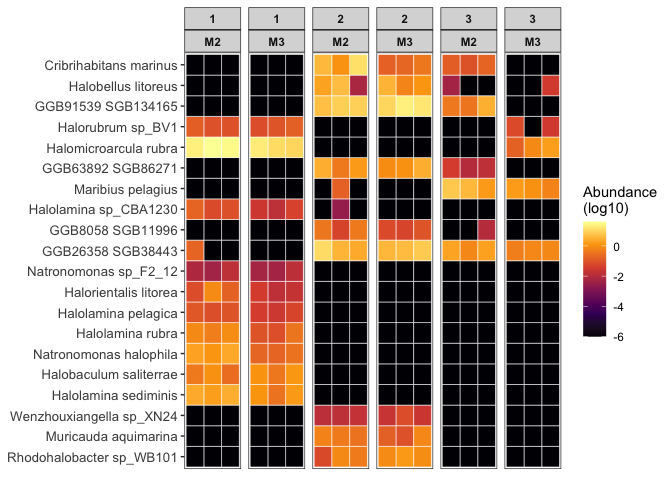

Organisation: Data Science Platform
Responsibles: Albert Pallejà Caro (apca@dtu.dk)
Alexander Zubov
(alzub@dtu.dk)
Edir Sebastian Vidal Casto
(s243564@student.dtu.dk)
Juliana Assis (jasge@dtu.dk)
Group comparison tutorial#
This markdown is to perform a group comparison of the species abundance among the three areas studied in the dataset.
R Packages that need to be installed#
library(ggplot2)
library(dplyr)
library(tidyr)
library(RColorBrewer)
library(FSA)
Load data objects#
Load species abundance, taxonomical annotation and metadata file
# Abundance table
abundance <- readRDS(file = "../data/MetaphlanAbundance_Species.rds")
rownames(abundance) <- gsub("_SRR_db1.metaphlan", "", rownames(abundance))
# Taxonomical annotation
annotation <- readRDS(file = "../data/MetaphlanAnnotations_Species.rds")
# Metadata
metadata <- read.table(file = "../data/metadata.tsv",
header = TRUE, sep = "\t",
quote = "",
row.names = NULL)
rownames(metadata) <- metadata$Sample
# Take only samples with sequencing and metadata information
abundance <- abundance[rownames(metadata),]
Areas comparison#
As there are three areas, we will use a non-parametric test (not assuming any distribution) for three groups: Kruskal-Wallis test. We need to run this test for all species comparing among Areas (1, 2, 3), therefore we need to code a loop to run the test for all species and later we need to correct for multiple testing (Bonferroni-Hochberg). For the significant ones we will run a pot-hoc dunnTest to figure out between which groups the differences exist.
🧪 Kruskal-Wallis Test#
The Kruskal-Wallis test is a non-parametric method used to determine if there are statistically significant differences in the abundance of taxa across different groups (e.g. treatments, timepoints, compartments).
🔗 Step 0: Merge Abundance Data with Metadata
Before performing the test, make sure your abundance table and metadata are merged appropriately so each sample has its associated group information.
🔍 Step 1: Prevalence Filtering
Microbiome abundance tables are often sparse. To reduce noise from rare taxa (e.g., species found in only one or two samples), we apply a prevalence filter.
We will keep only taxa that are present (non-zero abundance) in at least 20% of the samples.
Step 2: Kruskal–Wallis test for each taxon
An elegant way to run loops in R is using one of its “apply” functions
abundance_df <- as.data.frame(cbind(abundance,
Area = metadata$Area,
Sample = metadata$Sample))
taxa_cols <- setdiff(colnames(abundance_df),
c("Sample",
"Area"))
n_samples <- nrow(abundance_df)
min_prevalence <- 0.20 * n_samples
abundance_taxa_only <- abundance_df[, taxa_cols]
prevalent_taxa <- sapply(abundance_taxa_only[, taxa_cols],
function(x) sum(x > 0)) >= min_prevalence
filtered_taxa <- names(prevalent_taxa[prevalent_taxa])
❓ Question: How many species passed the filter?
kruskal_results <- lapply(filtered_taxa,
function(taxon) {
test_data <- abundance_df[, c(taxon,"Area")]
colnames(test_data) <- c("Abundance","Area")
kruskal <- kruskal.test(Abundance ~ Area,
data = test_data)
data.frame(
Taxon = taxon,
p_value = kruskal$p.value,
statistic = kruskal$statistic
)
})
kruskal_df <- do.call(rbind,
kruskal_results)
rownames(kruskal_df) <- kruskal_df$Taxon
Multiple testing correction#
Adjusting for multiple testing by Bonferroni and Hochberg method (False Discovery rate)
Filter significant taxa (e.g., FDR < 0.05)
kruskal_df$adj_p_value <- p.adjust(kruskal_df$p_value,
method = "BH")
significant_taxa <- kruskal_df %>%
filter(adj_p_value < 0.05)
significant_taxa$Species_name <-
annotation$species[match(rownames(significant_taxa),
rownames(annotation))]
## PhantomJS not found. You can install it with webshot::install_phantomjs(). If it is installed, please make sure the phantomjs executable can be found via the PATH variable.
Run Dunn’s test for significant taxa#
dunn_results <- lapply(significant_taxa$Taxon,
function(taxon) {
test_data <- abundance_df[, c(taxon, "Area")]
colnames(test_data) <- c("Abundance", "Area")
test_data$Abundance <- as.numeric(test_data$Abundance)
# Run dunnTest only if we have >1 group with non-zero data
tryCatch({
dunn <- dunnTest(Abundance ~ Area,
data = test_data,
method = "bh")
dunn_df <- dunn$res
dunn_df$Taxon <- taxon
return(dunn_df)
}, error = function(e) {
message(paste("Skipping",
taxon, "due to error:", e$message))
})
})
# Combine Dunn test results
dunn_df <- do.call(rbind, dunn_results)
dunn_df$Species_name <-
annotation$species[match(dunn_df$Taxon,
rownames(annotation))]
Let’s print the statistics results#
Let’s save the statistics for Kruskal-Wallis test
ordered by adj_p_value and with more logical order of the columns
significant_taxa <- significant_taxa %>%
arrange(adj_p_value) %>%
relocate(Taxon,
Species_name,
statistic,
p_value,
adj_p_value)
write.csv(significant_taxa,
file = "../results/report/04_Group-comparison/01_kruskal-wallis-results.csv",
row.names = TRUE, quote = FALSE)
write.csv(dunn_df,
file = "../results/report/04_Group-comparison/02_post-hoc-dunn-results.csv",
row.names = TRUE, quote = FALSE)
Plotting the top-20 significant species#
Get top 20 taxa from Kruskal–Wallis
top_taxa <- kruskal_df %>%
arrange(adj_p_value) %>%
slice(1:20) %>%
pull(Taxon)
Prepare long-format data with top taxa#
abundance_df$Sampling <- metadata$Sampling
abundance_long <- abundance_df %>%
select(Sample,
Area,
Sampling,
all_of(top_taxa)) %>%
pivot_longer(
cols = all_of(top_taxa),
names_to = "Taxon",
values_to = "Abundance"
)
Order taxa by significance and fix data-types#
abundance_long$Abundance <- as.numeric(abundance_long$Abundance)
abundance_long$Species_name <-
annotation$species[match(abundance_long$Taxon,
rownames(annotation))]
abundance_long$Species_name <- factor(abundance_long$Species_name,
levels = unique(abundance_long$Species_name))
Plot heatmap with ggplot2#
heatmap_top20 <- ggplot(abundance_long,
aes(x = Sample,
y = Species_name,
fill = log10(Abundance+0.000001))) +
geom_tile(color = "white",
size = 0.2) +
scale_fill_viridis_c(option = "B",
name = "Abundance\n(log10)") +
facet_grid(. ~ Area + Sampling,
scales = "free") +
theme_bw() +
theme(
axis.text.x = element_blank(),
axis.ticks.x = element_blank(),
panel.grid = element_blank(),
strip.text = element_text(face = "bold"),
axis.text.y = element_text(size = 10),
axis.title = element_blank()
)
## Warning: Using `size` aesthetic for lines was deprecated in ggplot2 3.4.0.
## ℹ Please use `linewidth` instead.
## This warning is displayed once every 8 hours.
## Call `lifecycle::last_lifecycle_warnings()` to see where this warning was generated.
heatmap_top20

# Save it as a png
ggsave("../results/report/04_Group-comparison/04_significants_heatmap.png",
width = 8, height = 8, dpi = 300)
Printing all package versions (good practice to ensure reproducibility)#
## R version 4.3.1 (2023-06-16)
## Platform: aarch64-apple-darwin20 (64-bit)
## Running under: macOS 26.3.1
##
## Matrix products: default
## BLAS: /Library/Frameworks/R.framework/Versions/4.3-arm64/Resources/lib/libRblas.0.dylib
## LAPACK: /Library/Frameworks/R.framework/Versions/4.3-arm64/Resources/lib/libRlapack.dylib; LAPACK version 3.11.0
##
## locale:
## [1] C.UTF-8/C.UTF-8/C.UTF-8/C/C.UTF-8/C.UTF-8
##
## time zone: Europe/Copenhagen
## tzcode source: internal
##
## attached base packages:
## [1] stats graphics grDevices utils datasets methods base
##
## other attached packages:
## [1] FSA_0.10.0 RColorBrewer_1.1-3 tidyr_1.3.1 dplyr_1.1.4
## [5] ggplot2_3.5.1
##
## loaded via a namespace (and not attached):
## [1] jsonlite_1.8.9 gtable_0.3.6 crayon_1.5.3 compiler_4.3.1
## [5] webshot_0.5.5 tidyselect_1.2.1 jquerylib_0.1.4 textshaping_0.4.0
## [9] systemfonts_1.1.0 scales_1.3.0 yaml_2.3.10 fastmap_1.2.0
## [13] R6_2.5.1 labeling_0.4.3 generics_0.1.3 knitr_1.49
## [17] htmlwidgets_1.6.4 tibble_3.2.1 munsell_0.5.1 bslib_0.8.0
## [21] pillar_1.9.0 rlang_1.1.4 utf8_1.2.4 DT_0.33
## [25] cachem_1.1.0 xfun_0.49 sass_0.4.9 viridisLite_0.4.2
## [29] cli_3.6.3 withr_3.0.2 magrittr_2.0.3 crosstalk_1.2.1
## [33] digest_0.6.37 grid_4.3.1 lifecycle_1.0.4 vctrs_0.6.5
## [37] evaluate_1.0.1 glue_1.8.0 farver_2.1.2 ragg_1.3.3
## [41] dunn.test_1.3.6 fansi_1.0.6 colorspace_2.1-1 rmarkdown_2.29
## [45] purrr_1.0.4 tools_4.3.1 pkgconfig_2.0.3 htmltools_0.5.8.1